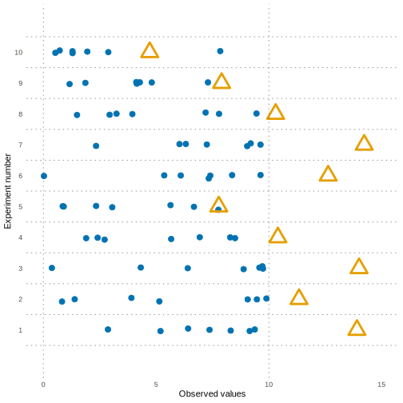
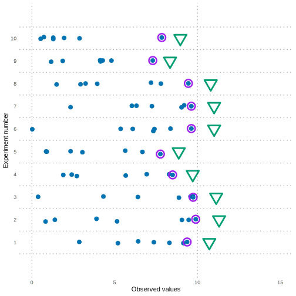
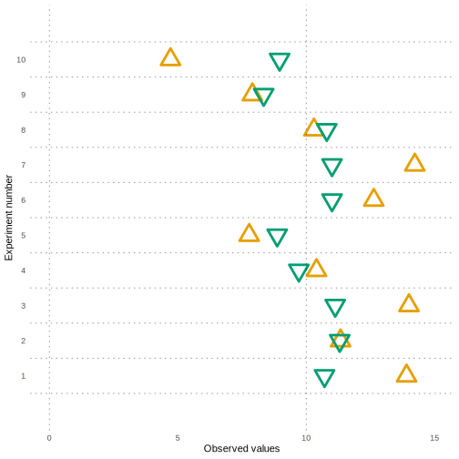
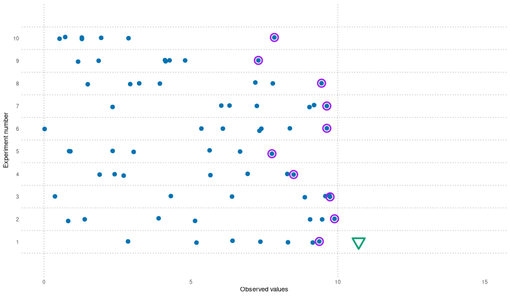
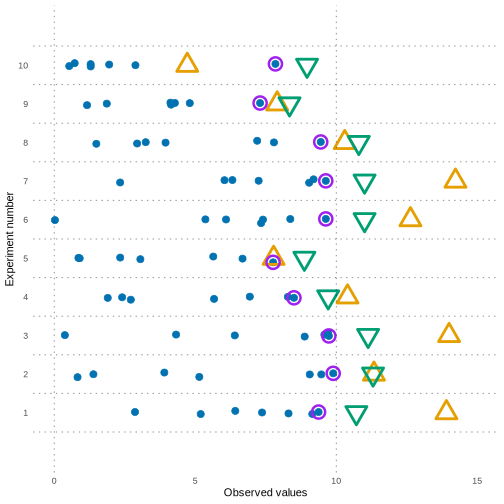
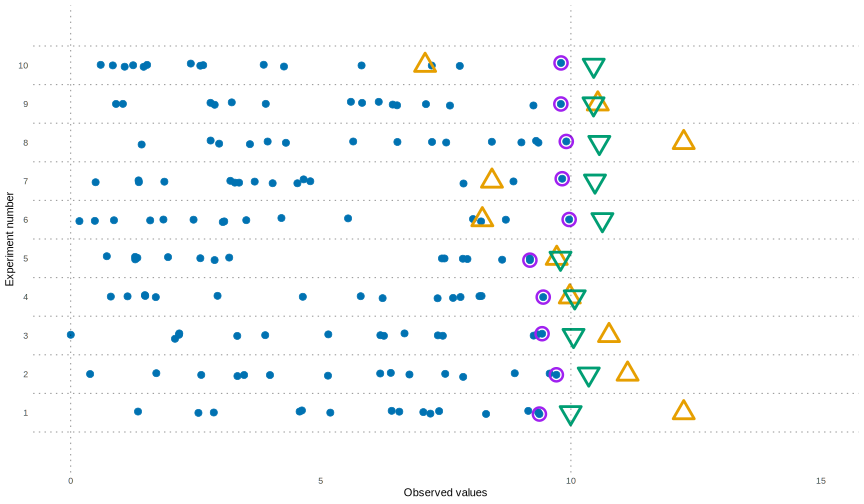
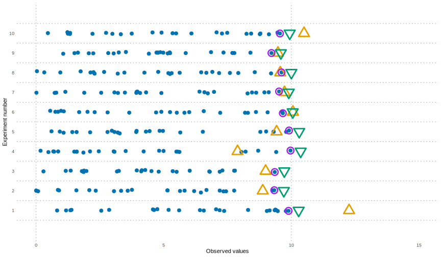
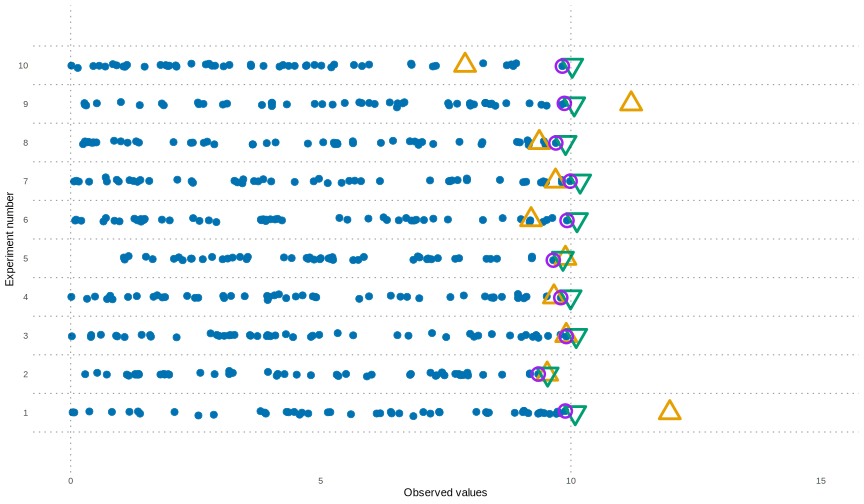

An Introduction to
Minimum Variance
Unbiased Estimators
October 29, 2024
Today’s plans
Learning outcomes
Remind ourselves of some estimator adjectives
Think about how to compare estimators
Introduce the Minimum Variance Unbiased Estimator (MVUE)
See a MVUE in action!
Meet the Rao-Blackwell theorem
Start thinking about how it could be used
A quick reminder
Estimators
In previous classes we studied an estimator, which was a function of sample data (a statistic), used to estimate a model parameter (or some function of a model parameter).
e.g. sample \(X_1,X_2,X_3,\ldots,X_n\) from \(N(m, 9)\) then try to estimate the unknown mean \(m\) using the sample’s information. A ‘good’ estimator for \(m\) was \(\bar{X} = \frac{1}{n}\sum_1^n{X_i}\).
Sufficiency
We called a statistic sufficient if it contained all the information in the sample about our target parameter. This was defined formally in terms of factorizing the likelihood function, i.e by looking at the conditional probability of the data given our parameter (see Fisher-Neyman factorization).
Unbiased
An estimator is called unbiased if its expectation (with respect to the randomness of the sampling) matches the target parameter.
e.g. using estimator \(\hat{M} = X_1\) is unbiased, since \(\mathbb{E}(\hat{M}) \equiv \mathbb{E}(X_1) = m\).
Now for today… can we ask for more than unbiased?
So in this realm of point estimates where we are estimating model parameters using some clever function of a sample we have already seen terms like sufficient and biased/unbiased but these are just Yes/No properties.
Estimator quality?
Can we find a way to rank or compare estimators, identify ‘good’ ones and ‘bad’ ones?
It turns out this is a very rich area, made more complicated by the possibility of using biased estimators whose bias disappears as sample size \(\to \infty\).
For today we shall stick to the realm of just unbiased estimators…
Let’s see some rival estimators
Normal sample, \(X_1, X_2, \ldots, X_n\) (imagine \(n=2\) if you like) from \(N(m, 9)\).
We could use estimator \(\hat{M_a} \equiv X_1\) but would it be better to use \(\hat{M_b} \equiv \frac{X_1+X_2}{2}\)?
Lower variance estimator?
Well, they’re both unbiased, so they have the same mean.
But perhaps one is less tightly focussed around the true mean?
You may be tempted to actually take the sample and compare the rival sample estimate values.
But this has two serious issues:
- we should be comparing the estimators (which are random variables)
- we don’t know \(m\) anyway, so there’s nothing to compare them both too!
So what will we do?
Our estimators have the same mean (they are unbiased).
So why don’t we find which one has a lower variance? The one with lower variance might give us theoretically closer estimates for our parameter.
But before we do…
Warning
Comparing the variance of two estimators isn’t the greatest idea ever, because there may still be infinitely many other unbiased estimators we didn’t try yet!
e.g. \(\hat{M_c}=\frac{1}{3}\left(2X_1+X_2\right)\) or \(\hat{M_d}=\frac{1}{7}\left(X_1+2X_2+4X_3\right)\) etc…
We’ll return to this calculation in a moment.
The Minimum Variance Unbiased Estimator (MVUE)
(also called the Uniform-MVUE to clarify minimality across all parameter values)
Definition
A minimum variance unbiased estimator for a chosen model parameter is an estimator whose variance, with respect to the randomness of the sample, cannot be beaten (i.e is the lowest/minimal) amongst all possible unbiased estimators for this model parameter.
You will have already seen some MVUEs and not known they had this property.
e.g.
- for our \(X_1,\ldots,X_n\) sample from a \(N(m,9)\) then \(\bar{X} \equiv \frac{1}{n}\sum_{i=1}^n X_i\) is an MVUE.
- for a sample \(X_1,\ldots,X_n\) from a \(\mathop{\mathrm{Poi}}(\lambda)\) then \(\bar{X}\) is again an MVUE.
Let’s compare our \(\hat{M_a}=X_1\) and \(\hat{M_b}=\frac{1}{2}\left(X_1+X_2\right)\)
part of our sample drawn from \(N(m,9)\)
Firstly, \(\mathbb{E}(\hat{M_a})=\mathbb{E}(\hat{M_b})=m\) so they are unbiased.
Next, \(\mathop{\mathrm{Var}}(\hat{M_a}) = 9\).
Finally, \[ \begin{align*} \mathop{\mathrm{Var}}(\hat{M_b}) & = \mathop{\mathrm{Var}}\left(\frac{X_1+X_2}{2}\right) \\ & = \frac{1}{4} \mathop{\mathrm{Var}}\left(X_1+X_2\right) = \frac{1}{4}\left(9+9\right) = 4.5. \end{align*} \] So \(\hat{M_b}\) has a better variance, a lower one. Indeed it has half the variance (the standard deviation is a factor \(\frac{1}{\sqrt{2}}\) smaller).
It turns out \(\bar{X}\) (for \(n>2\)) has an even lower variance. Calculate it yourself!
But before we start getting any wrong ideas about the sample mean, \(\bar{X}\),…
Sampling from the cts uniform distribution \(U[0,\theta]\)
independent random sample \(X_1,X_2,\ldots,X_n\) with unknown \(\theta\)
So consider the continuous uniform distribution between \(0\) and an unknown right-hand end point we will call \(\theta\).
Here are two sensible unbiased estimators:
\[ \hat{\Theta}_1 = 2 \bar{X} \qquad \text{and} \qquad \hat{\Theta}_2 = \frac{n+1}{n} \max(X_i). \]
Question 1
Discuss with your neighbour which you think is better. Any other immediate reasons to prefer one over the other?
Comparing \(\hat{\Theta}_1\) and \(\hat{\Theta}_2\)
Homework
Verify that \(\mathbb{E}(\max_1^n(X_i)) = \frac{n}{n+1}\theta\).
If you don’t recall, when learning about estimators we did verify that \(\hat{\Theta}_2\) was unbiased via this calculation. Go and find that calculation, or verify it again yourself.
Recall, we actually also looked at the likelihood and via the factorization theorem observed that \(\max(X_i)\) was a sufficient statistic for \(\theta\). We will return to this later, where we will learn that sufficient statistics are key to finding MVUEs (the Rao-Blackwell theorem).
But first let’s see how you did…
Estimator is \(\hat{\Theta}_1 = 2\bar{X}\)
Triangles are twice the mean of the sample

Estimator is \(\hat{\Theta}_2= \frac{8}{7}\max\left\{X_i\right\}\)
Triangles are based on max observation value

Comparison of the two estimators
Symbols: = \(2\bar{X}\), = \(\frac{8}{7}X_{(n)}\)

Animation to illustrate the variance of \(2\bar{X}\)
Large variance

Animation to illustrate the variance of \(\frac{8}{7}\max\{X_i\}\)
Small variance

All data and estimates in one diagram
Recall: all data drawn from \(U \sim [0,10]\)

Proof that \(\hat{\Theta}_2\) is ‘better’ than \(\hat{\Theta}_1\)
So it looks like \(\hat{\Theta}_2\) is a clear winner, this can be verified by actually performing the calculations of the estimators’ variances…
Guided questions to calculate the variances of these two estimators will appear on the tutorial/exercise sheets.
So we probably should be using \(\hat{\Theta}_2\) in preference to \(\hat{\Theta}_1\) since we know its also unbiased but has a much lower variance.
Questions
What made \(\hat{\Theta}_2\) such a ‘good’ estimator?
How could we possibly prove that \(\hat{\Theta}_2\) is the minimum variance unbiased estimator?
We can’t list all unbiased estimators and compare them all with it. We need some theorems!
Finding a MVUE
MVUEs can be messy
It turns out finding MVUEs in general is actually not easy. In certain nice examples, with well-known distributions it can be possible, but it is almost always quite algebraically messy.
Our theorems
The first and simpler result that we will be able to use is the Rao-Blackwell theorem, we may later state (but not prove) the more powerful Lehmann-Scheffe theorem.
Different approaches
These complications and the conditions on these theorems will mean that the MVUE is not the only way statisticians quantify ‘good’ estimators, in this module we will also discuss two other popular methods, namely maximum likelihood estimators and estimators from the method of moments.
The Rao-Blackwell theorem
a sometimes useful theoretical result
Rao-Blackwell Theorem
Let \(\hat\Theta\) be an unbiased estimator for \(\theta\), with \(\mathop{\mathrm{Var}}(\hat\Theta)<\infty\).
If \(T\) is a sufficient statistic for \(\theta\), then define a new estimator
\[ \hat\Theta^* \equiv \mathbb{E}(\hat\Theta | T). \]
Then for all \(\theta\), \[ \mathbb{E}(\hat\Theta^*) = \theta \qquad \text{and} \qquad \mathop{\mathrm{Var}}(\hat\Theta^*) \leq \mathop{\mathrm{Var}}(\hat\Theta). \]
Explicitly: if you have an estimator and also know a sufficient statistic for that parameter then… if you can calculate the conditional expectation then you can create a (typically) lower variance estimator.
Rao-Blackwellization
There are two primary uses of this theorem:
Rao-Blackwellization
Start with a (possibly ‘poor’) unbiased estimator \(\hat\Theta\) and sufficient statistic \(T\).
We could just do as the theorem says. Calculate \(\hat\Theta^* \equiv \mathbb{E}(\hat\Theta | T)\) to get a new better estimator.
Calculating conditional expectations can be very difficult, we essentially need to calculate \[ \mathbb{E}(\hat\Theta | T(\mathbf{X})=t ) \] for each possible value \(t\) of our sufficient statistic.
However, a very powerful observation is that \(\mathbb{E}(A|B)\) is always a function of \(B\).
So \(\hat\Theta^* = \hat\Theta^*(T)\) will be a function of \(T\), i.e. its dependence on the data is only through the value the data give to \(T(\mathbf{X})\).
A sneakier use of Rao-Blackwell
So we actually have a second option, which doesn’t require starting with an unbiased estimator \(\hat\Theta\). First find a sufficient statistic \(T\). Now turn on your imagination…
- We pretend we have an unbiased \(\hat\Theta\) (we don’t!)
- We imagine performing Rao-Blackwellization on it, using \(T\)
- We obtain a ‘good’ unbiased estimator \(\hat\Theta^*\) which depends on the data only through \(T\). This will be a function of \(T\).
Second use of Rao-Blackwell
So we can instead just look to try and find a function of \(T\) which is unbiased.
If we find such a \(T\) then further Rao-Blackwellization won’t change it at all and we can hope it might even be a MVUE (but we’ll need another theorem!).
The method involves guessing a function of \(T\), calculating its expectation and then editing the function slightly if necessary to make it unbiased. Like we did with \(\max(X_i) \mapsto \frac{n+1}{n}\max(X_i)\).
End of introduction
All data and estimates in one diagram
Ten size \(n=15\) samples drawn from \(U \sim [0,10]\)

All data and estimates in one diagram
Ten size \(n=25\) samples drawn from \(U \sim [0,10]\)

All data and estimates in one diagram
Ten size \(n=50\) samples drawn from \(U \sim [0,10]\)

Uniqueness of MVUEs
We can use the Rao-Blackwell theorem, some variance calculations, algebra and the Cauchy-Schwarz inequality (a variance identity) to prove that when an MVUE exists then it is unique.
Bad news #1
MVUEs don’t always exist!
Guaranteeing an MVUE?
Question
Are there conditions under which our \(\hat\Theta^*\) from the Rao-Blackwell theorem can be known to be the MVUE?
Yes!
It comes down to a technical condition on a statistic of being complete which it’s beyond this module to prove. This is what the Lehman-Scheffe theorem will state. It comes down to whether the information in the statistic \(T\) goes beyond being sufficient but also containing all the possible information from the sample, about \(\theta\).
It’s also tied in with looking the likelihood of the data and identifying properties about how \(\theta\) appears.
Are we done?
No, of course not! There are many ways in which we’re not done.
Theoretically we can go on to study…
- Can we quantify how good the MVUE is? Fisher information and the Cramer-Rao bound.
- Can we achieve C-R bound even when MVUE doesn’t exist? (via efficient biased estimators, like MLE)
Practical extensions
More practically we can go on to ask
- We limited ourselves to just unbiased ones. Sure we saw before that bias is a bad idea, but it’s not the end of the world if the bias size \(\to 0\) as \(n\to \infty\) (consistency).
So perhaps there are also some really good estimators which are biased, but have even better overall variance.
In this context the variance can be decomposed into variance caused by the bias, and variance from the estimate. We will talk about the mean square error.
- The MVUE had other drawbacks:
- it may not exist!
- it can be very hard to find even when it exists
- faster methods exist for large samples, which also minimize overall variance (as in 1. above)
Other methods we will discuss
There are other methods which have been invented to more simply get a ‘good’ estimate. These other methods are not so fundamentally rooted in the theoretical method as our MVUE was. The two most common begin life without demanding we only look amongst unbiased estimated.
We will go on to study:
- the Method of Moments: a quick and dirty, but easy to apply method which has certain easy to understand properties, but which has a lot of drawbacks
- maximum likelihood estimators (MLEs): a typically slightly biased (but consistent) estimator which is easier than the MVUE to calculate (but still can require computer searching) which searches the full space and works excellently for large \(n\).
Serious extension!
- For multivariate normal samples the James-Stein estimator is common example of better than MVUE performance!
- Estimating \(\boldsymbol{\mu}\) in a \(N(\boldsymbol{\mu},\mathbf{I})\) in \(k\)-dimensions.
- We take a size \(n\) sample \(\mathbf{X_1},\mathbf{X_2},\mathbf{X_3},\ldots,\mathbf{X_n}\) each a vector of length \(k\).
- We can estimate each \(\mu_i\) via \(\bar{X_i}\) the mean of the (\(n\)) \(i\)-th components in the sample.
- This is the MVUE: it’s unbiased and achieves best possible variance (for an unbiased one)
- However, there’s a factor \(K<1\) (which depends on \(\mathbf{X}\)) such that using \(K \bar{X_i}\) works better!
Each dimension’s estimate is scaled down a little, towards \(0\). Achieving a lower mean square error, by introducing a small bias.
Thanks!
MVUEs